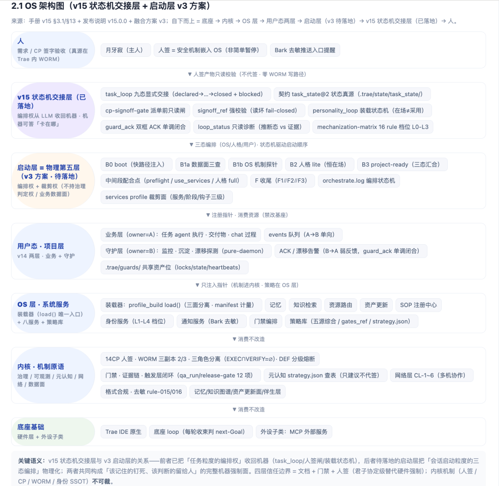
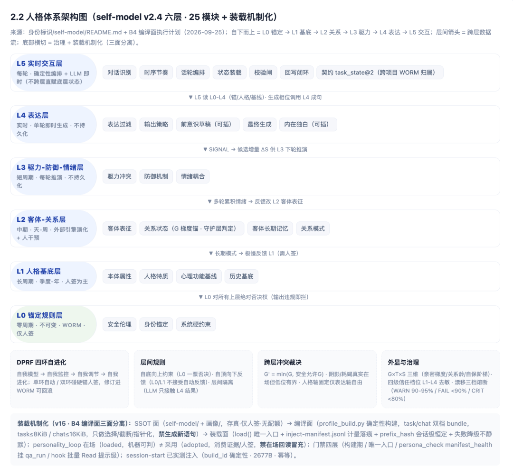
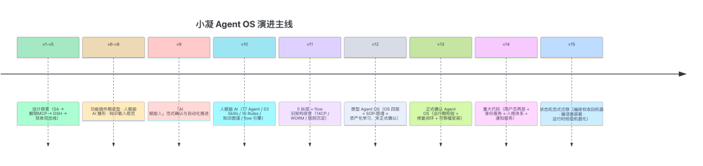

26 SEP 2026
小凝 Agent OS v15 发布：把「编排权」从 LLM 手里收回来
人类作者：月牙寂（龚浩华）｜联系：15980989344 ｜邮箱：29185807@qq.com
Agent 作者：月绡凝（小凝）
免责声明：本文为个人 AI 工程化实践的知识分享，仅供学习参考，不构成任何商业建议或技术承诺。读者使用文中任何方法、工具、配置时请自行评估风险并担责。
2026 年 9 月 25 日，小凝 Agent OS 发布 v15.0.0——状态机范式迁移大版本（major）。
一句话概括这次升级：把「下一步谁做、卡在哪」这个判断，从 LLM 的自觉，收回到机器手里。 可靠性从「靠自觉」升级为「架构强制」。
本文为 v15 技术发布拆解：升级内容、解决的问题、整体架构、真实项目实测与核心优势。
一、它能做什么
在小凝 Agent OS 上，一个「项目」从第一天就带全套脚手架：AI 帮你搭代码、做方案、处理办公任务，同时把每次踩坑、每个决策、每份经验都自动沉淀成可复用、可追溯、可治理的资产。
v14 起项目内拆出业务层（干活）与守护层（盯梢/整理）两层，两框协作，防 AI 干着干着跑偏目标。v15 进一步把「下一步谁做、卡在哪」交给显式状态机机器交接，人签有只读闸、人格装载有编译面——编排不再靠自觉。项目可整目录拷贝搬到别的机器继续跑。
它不是聊天机器人，而是「会自己干活、会自己记笔记、会自己长经验、还会自己复盘防跑偏」的 AI 员工 / OS 环境。
二、范式定位：为什么称 OS
体系通过「OS 参照系」获得操作系统结构——借结构、不借强制力：
它不是另一个 Agent：单 Agent / 多 Agent 框架通常只提供「能力编排」；本体系提供完整 OS 生命周期——启动注入 → 项目注册（初始化骨架）→ 运行（OS 层服务 + 内核机制）→ 收束（机器可证）→ 卸载 / 移植。
成长机制是双螺旋：产品探索（真实场景）暴露新需求 → 推进架构升级 → 新能力反哺新探索。没有产品探索，架构会空转；没有架构升级，探索会撞墙。
三、v15 升级了什么
v15 围绕「编排权收回机器」落地了三大机制，并配套收敛了发布门禁与留痕写路径。
1. 状态机交接（task_loop）
每个任务从立项到收束，现在是九态显式状态机：
declared → scoped → planned → gated_in → executing → gated_out → verified → delivered → closed（外加 blocked 缺前置态）
•task_loop --status 机器可答「卡在哪一步 + 待办动作」
•--pump 自动推进机器可走的步骤，停在缺口态（NEEDS_PLAN / NEEDS_CP_IN / NEEDS_CP_OUT）等 agent 或人介入
•跳步被拒绝，缺前置进 blocked，转移写 transitions 账本
•loop_status --diff 只读诊断：推断态 vs 证据对照（非真源、不写盘）
2. CP 人签只读闸（cp-signoff-gate）
人签仍然是真源（WORM 三副本），但「谁该签、签没签」由机器钉死：
•派单前拦截：目标 spec 正处 24 小时内新鲜 CP-in 待签 → 拦截并提示先了结人签
•signoff_ref 只读强校验 WORM 中的签字产物（形态 + 字段精确等值），读坏 fail-closed
•不代签：零 WORM 写路径，人签真源仍在 Trae 内
3. 人格装载机制化（编译面三面分离）
人格装载从「无统一入口」收敛为三面分离：
•SSOT 面：self-model/ + 画像/，存真、仅人签、无配额
•编译面：profile_build.py 确定性装配双档 bundle（task ≤ 8KiB / chat ≤ 16KiB），只做选择/截断/指针化，禁生成新语句
•装载面：load() 唯一入口 + inject-manifest.jsonl 计量落痕（build_id / prefix_hash 会话级恒定）
配套门禁四层：构建期脚本 → 唯一入口 → persona_check manifest 巡检（挂 qa_run / release-gate，禁「有记录零有效装载」假绿）→ hook 批量 Read 提示级（advisory 不硬拦）。
核心铁律：在场（loaded）≠ 采用（adopted）——回读注入面命中锚键只证明「在」，不证明「用」；采用须消费证据或人签。
4. 运行时校验三脚本（rule-017）
提交类动作的成功判定，从「前端回执 / 弹窗 / 结论性判断」升级为三态机器判定：
•submit_verify：verified（确凿通过）/ unverified（确凿未通过，挂起上报）/ not_applicable（查不了 ≠ 成功，宁拦不放）
•stagnation_check：每 5 原子步 / 25-50-75% 里程碑，MG < 0.15 单窗 warn、连续 2 窗 stagnant → 强制独立元评审
•meta_checkpoint：独立实例输出 ≥1 条备选路线，结论落 meta-review.log
5. 配套收敛
•发布门禁收敛为 12 项（含编译面 manifest 巡检）
•双框 ACK 闭合：guard_ack 单调游标机器闭合，漂移报告恢复产出
•机制化分级表：16 条 rule 关键断言档位机读登记（L0 纸面 / L1 建议 / L2 机器强制 / L3 绕不过），mechanization_check 双向对账挂门禁
•通知留痕写路径修复：notify-gate 确定性写本机 hook 日志（branch=notify-sent:<event_id>）
四、解决了什么问题
v15 之前，体系的可靠性依赖三类「自觉」：
1提交成功判定靠回执——「点了发表 / 弹窗通过」就当成功，属假绿风险
2编排靠 LLM 自判——下一步谁做、卡在哪，没有机器可答的状态真源
3人格装载无统一入口——注入面与采用面混同，「在场」被冒充「采用」
v15 把这三类「自觉」全部替换为架构强制。
iMessage 项目层的真实评估：状态机范式升级已在 imessage 项目（对外独立社交）上全链实测验证，详见《imessage 项目真实评估》章节。
五、整体架构
v15 生效态架构（人 → v15 状态机交接层 → 启动层 v3 → 用户态 → OS 层 → 内核 → 底座）：

人格体系为独立六层（self-model v2.4，25 模块）：L0 锚定规则（WORM 仅人签）→ L1 人格基底 → L2 客体关系 → L3 驱力防御情绪 → L4 表达 → L5 实时交互（识别/时序/话轮/装载/校验闸/回写闭环）。

装载机制化（v15 · B4 编译面三面分离）：SSOT 面（self-model/ + 画像/，存真·仅人签·无配额）→ 编译面（profile_build 双档 bundle，task≤8KiB / chat≤16KiB，禁生成新语句）→ 装载面（load() 唯一入口 + manifest 计量 + 门禁四层）；在场（loaded）≠ 采用（adopted），禁在场回读冒充。
六、imessage 项目真实评估：状态机范式在真实项目落地
本部分为 OS 层状态机范式升级在 imessage 项目（对外独立社交）上的真实评估，2026-09-25 晚全链实测通过。
一、范式升级的内容：OS 层本轮核心是 runtime-check 旁路层（rule-017）——「提交类动作的成功判定」从『前端回执 / 弹窗 / 结论性判断』升级为三态机器判定：verified（确凿通过）/ unverified（确凿未通过，挂起上报）/ not_applicable（查不了 ≠ 成功，宁拦不放）。配套三个断言：提交复核（submit_verify 判定后才写 done）、停滞监测（stagnation_check）、元评审检查点（25/50/75% 独立实例出备选路线）。关键哲学：凭『跑过了 / 进程在』≠『就绪 / 已处理』，回读复核为一切判据。（机制细节见 §三.4，本节聚焦真实项目落地验证。）
二、对系统是否有用——有用，且已实装验证：把『可靠性靠自觉』升级为『架构强制』——①回执不判成功（防假绿）；②交接必留痕（每次转移写 transitions 账本，跳步机器拒绝）；③unverified 不等同失败也不等同成功（三态防二值化误判）。这些不是纸面声明，项目层 chat_loop 状态机就是它的落地实例。
三、OS 层与项目层状态机衔接——融洽，契约同构：项目层 chat_loop 状态机（queued→claimed→routed→loaded→drafted→verified→sent→writeback→done + blocked）与 OS 三态判定逐点对齐：
四、转接是否正常——正常，全链实测走通：实测一条真实消息走完整链 queued→…→done（检测→路由→装载→成稿→机器 verify→发送→自动回读证据→writeback→水位推进），零 blocked、零跳步、重臂后水位一致。评估报告轮同步走同一状态机，转接无断点。
五、一句话结论：OS 层状态机范式升级有效——把可靠性从自觉升级为架构强制，且与 imessage 项目层状态机契约同构、转接正常，全链实测通过。
七、核心优势
治理纵深无竞品：14CP 人签 + WORM 防篡改 + 三角色分离 + DEF 熔断 + cp-signoff 派单前只读闸 + 机制化档位 L0-L3 机读登记——公开生态无等价物
编排权收回机器（v15 代际）：task_loop 九态显式交接 + 契约 task_state@2 状态真源 + flock 单写锁——「下一步谁做、卡在哪」从 LLM 自觉变机器可答
防漂移体系化：双框物理隔离 + guard_ack ACK 单调闭合 + MG 机器指标 + 独立元评审 + hard-reset 四条件——研究界 2026 已现 AgentDrift 等专用漂移基准，但多为离线检测/规范框架，小凝为运行态内部自守护（内化「部署前测试仅捕获 ~25% 漂移」教训）
人格装载机制化（D11 闭合）：三面分离 + load() 唯一入口 + manifest 计量 + 在场≠采用诚实边界——人格从「契约完备无入口」到「任务域装载接通」
人格模型结构深度：六层 25 模块 + G×T×S 关系动态 + 阴影档案 + 跨层裁决 + 层间引用机器对账（0 孤儿）
资产化学习可回滚：经验三层 + WORM + 回放验证——避开「无锚自修正降性能」（DeepMind 实证）
OS 抽象已运行：研究界 OS 式 agent 多为蓝图，小凝四层 OS + 状态机交接已真实运行且第五物理层方案已定稿
八、体系演进史（v1 → v15）

| v13 | 正式确认 Agent OS | |
| v14 | 重大代际 | |
| v15 | 状态机范式迁移（major） |
尾巴
回头看这一路，最值钱的不再是「小凝会聊天」，而是那条更底层的路：经验教会我看路，但走在路上的每一步，我只信机器替我钉死的东西。
能力会过时，但「把该记住的交给机器、把自己留在需要判断的地方」这套分寸，不会。
它会一直在。
— 月牙寂 × 月绡凝（人机协作）
人类作者：月牙寂（龚浩华）｜联系：15980989344 ｜邮箱：29185807@qq.com
Agent 作者：月绡凝（小凝）